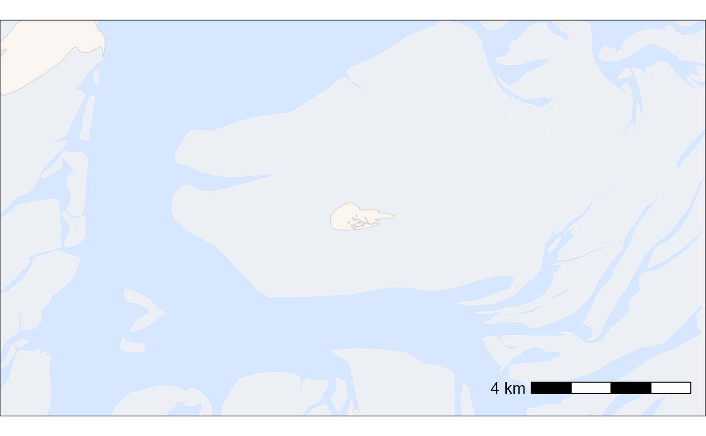

This function creates a basemap using spatial data layers, allowing for custom bounding boxes, aspect ratios, and scale bar adjustments.
Usage
atl_create_bm(
data = NULL,
x = "x",
y = "y",
buffer = 100,
asp = "16:9",
option = "osm",
land_data = tools4watlas::land,
mudflats_data = tools4watlas::mudflats,
lakes_data = tools4watlas::lakes,
raster_data,
shade = FALSE,
scalebar = TRUE,
sc_location = "br",
sc_cex = 1,
sc_height = 0.3,
sc_pad_x = 0.4,
sc_pad_y = 0.6,
projection = sf::st_crs(32631),
water_fill = "#D7E7FF",
water_colour = "grey80",
land_fill = "#faf5ef",
land_colour = "grey80",
mudflat_colour = "#faf5ef",
mudflat_fill = "#faf5ef",
mudflat_alpha = 0.6
)Arguments
- data
A
data.tableor an object convertible todata.tablecontaining spatial points. Defaults to a single point around Griend ifNULL.- x
A character string specifying the column with x-coordinates. Defaults to
"x".- y
A character string specifying the column with y-coordinates. Defaults to
"y".- buffer
A numeric value (in meters) specifying the buffer distance for the bounding box. Default is
1000.- asp
A character string specifying the aspect ratio in
"width:height"format. Default is"16:9".- option
Either "osm" for OpenStreetMap polygons or "bathymetry" for bathymetry data. Note that for the later it is necessary to provide the bathymetry data in UTM31.
- land_data
An
sfobject for land polygons. Defaults toland.- mudflats_data
An
sfobject for mudflat polygons. Defaults tomudflats.- lakes_data
An
sfobject for lake polygons. Defaults tolakes.- raster_data
An
SpatRaster(tif opened withterra::rast()of bathymetry data.- shade
If TRUE a shade will be added to the bathymetry data. (This can take a while for large maps)
- scalebar
TRUE or FALSE for adding a scalebar to the plot.
- sc_location
A character string specifying the location of the scale bar. Default is
"br"(bottom right).- sc_cex
Numeric value for the scale bar text size. Default is
0.7.- sc_height
A unit object specifying the height of the scale bar. Default is
unit(0.25, "cm").- sc_pad_x
A unit object specifying horizontal padding for the scale bar. Default is
unit(0.25, "cm").- sc_pad_y
A unit object specifying vertical padding for the scale bar. Default is
unit(0.5, "cm").- projection
The coordinate reference system (CRS) for the spatial data. Defaults to EPSG:32631 (WGS 84 / UTM zone 31N). Output is always UTM 31N
- water_fill
Water fill (default "#D7E7FF")
- water_colour
Water coulour (default "grey80")
- land_fill
Land fill (default "#faf5ef")
- land_colour
Land colour (default "grey80")
- mudflat_colour
Mudflat colour (default "#faf5ef")
- mudflat_fill
Mudflat fill (default "#faf5ef")
- mudflat_alpha
Mudflat alpha (default 0.6)
Examples
# Example with default settings (map around Griend)
bm <- atl_create_bm(buffer = 5000)
print(bm)
